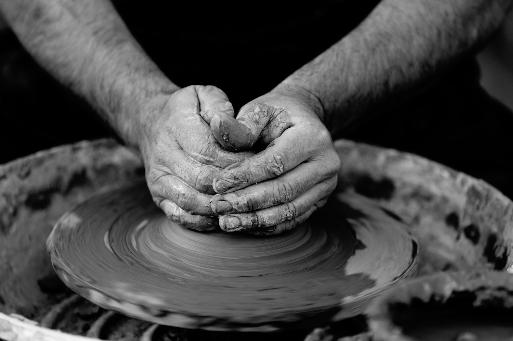

세라믹스(ceramics) 또는 세라믹은 열과 냉각 활동으로 마련된 무기 화합의, 비금속 고체이다.[1] 점토 등 천연의 원료를 사용해서 만들며, 용기로 사용되어 왔다. 이에 대하여 파인 세라믹스(fine ceramics)는 고순도의 인공 원료를 사용해서 만들며, 전자재료, 정밀기계 재료 등 다양한 용도에 쓰인다. 세라믹스는 금속과는 반대로 전기를 잘 전도하지 않을 뿐 아니라, 유기 재료와는 달리 고온에도 잘 견딘다는 것이 특징이다.
일반적으로 세라믹은 수정처럼 원자들이 규칙적으로 배열된 형태를 띄고 있기 때문에, 무기 화합의 세라믹으로 한정하여 세라믹을 지칭하기도 한다. 그러나 그렇지 않은 형태의 세라믹도 모두 포함할 수 있다.